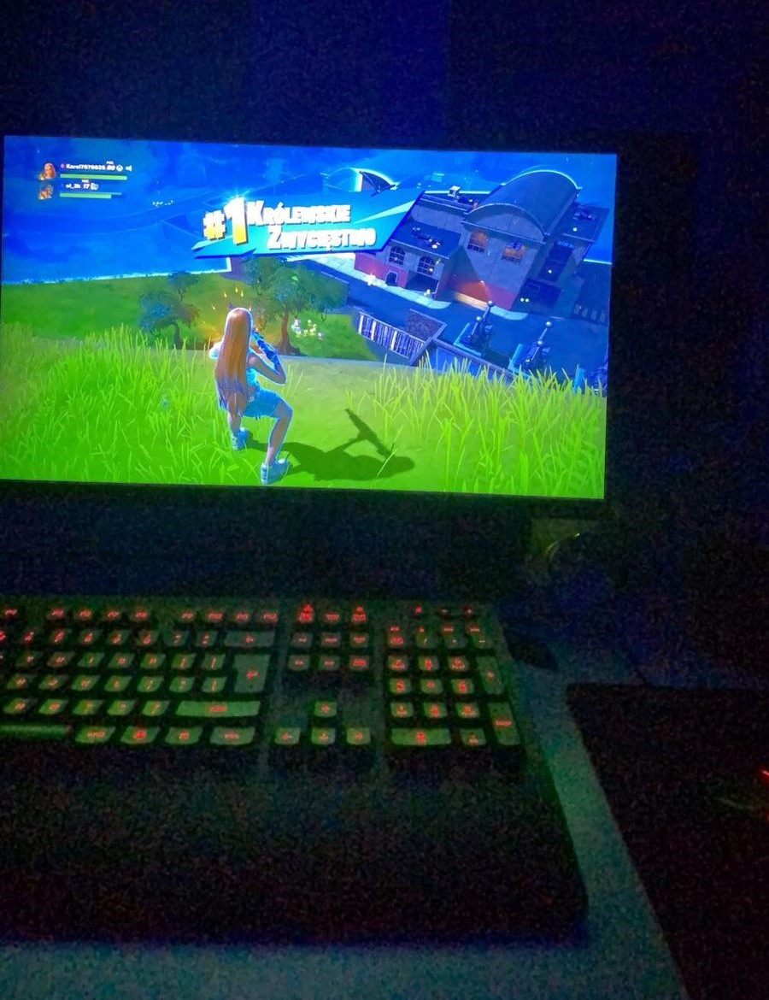

Gry komputerowe to jedna z najpopularniejszych form rozrywki na świecie. Dzięki nim możemy przenieść się do wirtualnych światów, przeżywać niesamowite przygody, rywalizować z innymi graczami lub po prostu relaksować się po ciężkim dniu. W dzisiejszych czasach gry komputerowe oferują ogromną różnorodność – od gier akcji, przez strategie, aż po gry fabularne, które pozwalają na długie godziny spędzone w ciekawych, wciągających historiach.
Gry komputerowe to nie tylko zabawa, ale także sposób na rozwój. Wiele z nich wymaga logicznego myślenia, szybkiej reakcji, a także współpracy z innymi graczami. Gry online, w których można rywalizować z osobami z całego świata, stają się coraz bardziej popularne. Dzięki nim poznajemy nowych ludzi, rozwijamy umiejętności społeczne i uczymy się pracy zespołowej.
Oprócz rozrywki, gry komputerowe często stają się także formą sztuki. Niesamowita grafika, muzyka i fabuła sprawiają, że gry mogą oferować doświadczenia porównywalne do filmów czy książek. Wiele gier ma także wartości edukacyjne, pomagając w nauce języków obcych, historii czy matematyki.
Choć niektórzy mogą uważać gry komputerowe za coś, co pochłania za dużo czasu, w rzeczywistości mogą one być także sposobem na rozwój umiejętności, odreagowanie stresu, a także doskonałą formą rozrywki w gronie przyjaciół. Dla wielu osób to pasja, która dostarcza emocji, wyzwań i satysfakcji.

Powrót do strony głównej...